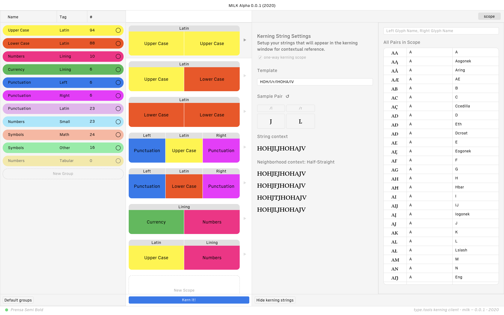

class: section # Interfaces & Typefaces <footer> <div class="runner-1">Marie Otsuka</div> <div class="runner-2">May 9, 2022 @ Type Media </footer> --- class: middle, center ## Hello! <footer> <div class="runner-1">Introduction</div> <div class="runner-2"></div> </footer> ??? Thanks so much for inviting me to share my work with you today. --- - Type design & tool engineering<br> at [Occupant Fonts](https://occupantfonts.com) <footer> <div class="runner-1">Introduction</div> <div class="runner-2">What I do</div> </footer> -- - Graphic design, <br> Web design & development -- - Teaching programming /<br> type-related courses at [RISD](https://risd-web.github.io/webtype-spring2020/students/) --- class: section, middle *Tool Design* # Organizational Interfaces --- class: middle, center ## Project Milk, *ongoing* ##### with [Cem Eskinazi](https://www.cemeskinazi.com/) and [Nic Schumann](https://nicschumann.co/) ##### (and contributions from [Rubén Rodríguez](https://rubenrodriguez.me/) and [Matt Phillips](https://mattphillips.us/) ) <footer> <div class="runner-1">Organizational Interfaces</div> <div class="runner-2">Project Milk</div> </footer> --- class: middle, center ## Auto-kerning Paradox <footer> <div class="runner-1">Organizational Interfaces</div> <div class="runner-2">Project Milk</div> </footer> --- <ol class="numbered"> <li>Plan</li> </ol> <div class="figure" id="plan"> <div class="list-build">Upper Case × Upper Case</div> <div class="list-build">Upper Case × Lower Case</div> <div class="list-build">Upper Case × Numbers</div> <div class="list-build">Numbers × Numbers</div> <div class="list-build">Upper Case × Punctuation</div> <div class="list-build">Lower Case × Punctuation</div> <div class="list-build">...etc.</div> </div> <footer> <div class="runner-1">Organizational Interfaces</div> <div class="runner-2">Project Milk</div> </footer> --- <ol class="numbered"> <li> Plan</li> <li> Kern</li> </ol> <div class="figure"> <div class="kern-pair">ATA</div> <div class="kern-pair">AYA</div> </div> <footer> <div class="runner-1">Organizational Interfaces</div> <div class="runner-2">Project Milk</div> </footer> --- <ol class="numbered"> <li> Plan</li> <li> Kern</li> <li> Track</li> </ol> <div class="figure" id="progress"> <div class="list-build"><span class="check">✓</span> Upper Case × Upper Case</div> <div class="list-build"><span class="check">✓</span> Upper Case × Lower Case</div> <div class="list-build"><span class="check">✓</span> Upper Case × Numbers</div> <div class="list-build"> Numbers × Numbers</div> <div class="list-build"> Upper Case × Punctuation</div> <div class="list-build"> Lower Case × Punctuation</div> <div class="list-build">...etc.</div> </div> <footer> <div class="runner-1">Organizational Interfaces</div> <div class="runner-2">Project Milk</div> </footer> --- <ol class="numbered"> <li> Plan</li> <li> Kern</li> <li> Track</li> <li> Proof</li> </ol> <div class="figure"> <div class="proof-pair">HOHATAHOH</div> <div class="proof-pair">HOHVTVHOH</div> <div class="proof-pair">HOHWTWHOH</div> <div class="proof-pair">HOHYTYOH</div> <div class="proof-pair">HOHXTXOH</div> <div class="proof-pair">HOHKTKOH</div> </div> <footer> <div class="runner-1">Organizational Interfaces</div> <div class="runner-2">Project Milk</div> </footer> --- class: cols - <ol class="numbered"> <li><em>Help</em> plan</li> <li><em>Auto</em> kern</li> <li><em>Auto</em> track</li> <li><em>Help</em> proof</li> </ol> -  <footer> <div class="runner-1">Organizational Interfaces</div> <div class="runner-2">Project Milk</div> </footer> --- class: middle, center ## Variable Font Visualizer ## [vfbounds.occupantfonts.com](https://vfbounds.occupantfonts.com/) ##### with [Nic Schumann](https://nicschumann.co/), 2020~ --- Fun with [Variable Fonts](https://vf.typenetwork.com/) ## Continuous fluidity <footer> <div class="runner-1">Organizational Interfaces</div> <div class="runner-2">VF Bounds</div> </footer> --- Not so fun with variable fonts ## Breaking variability <footer> <div class="runner-1">Organizational Interfaces</div> <div class="runner-2">VF Bounds</div> </footer> --- class: section, middle *Typesetting functions* # Typographic Interfaces --- class: quote “Variable Fonts represent an opportunity to reinvent the relationship between me, the type designer, and my user ... we work together to make typography.” <figcaption>David Jonathan Ross, <a href="https://vimeo.com/251494096">We Are Family! I’ve Got All My Variations With Me</a><br>Type @ Cooper, 11/6/2017</figcaption> <footer> <div class="runner-1">Typographic Interfaces</div> <div class="runner-2"></div> </footer> --- class: center, middle ## A function of *the user* <footer> <div class="runner-1">Typographic Interfaces</div> <div class="runner-2">Occupantfonts.com</div> </footer> -- # [occupantfonts.com](https://occupantfonts.com/) ##### with [Cem Eskinazi](https://www.cemeskinazi.com/) and [June Shin](https://junesh.in/), 2020 ??? Responsive Menu Items, Edit Mode --- class: center, middle ## A function of other *typefaces* <footer> <div class="runner-1">Typographic Interfaces</div> <div class="runner-2">Counterparts</div> </footer> -- # [counterparts](https://morisawausa.github.io/_counterparts/animals-alphabets/#en-landing) ##### with Morisawa Japan, ongoing --- class: section, middle *Typefaces as functions* #Environmental interfaces --- class: quote “Technology is the active human interface with the material world.” <figcaption>Ursula le Guin, <a href="http://ursulakleguinarchive.com/Note-Technology.html">A Rant about “Technology”</figcaption> --- class: middle, center ## A function of the *seasons* <footer> <div class="runner-1">Environmental Interfaces</div> <div class="runner-2">Pentameter</div> </footer> -- # [pentad.world](https://pentad.world) ##### with [Laurel Shwulst](https://laurelschwulst.com/) and [Tiger Dingsun](https://www.tiger.exposed/index), May 2022 --- class: grey, cols -  -  <footer> <div class="runner-1">Environmental Interfaces</div> <div class="runner-2">Pentameter</div> </footer> --- class: grey, cols, middle -  <figcaption>Kennett, Bruce. W.A. Dwiggins: A Life in Design.</figcaption> -  <figcaption>X-acto knife cutouts</figcaption> <footer> <div class="runner-1">Environmental Interfaces</div> <div class="runner-2">Pentameter</div> </footer> --- class: grey, cols, middle  <footer> <div class="runner-1">Environmental Interfaces</div> <div class="runner-2">Pentameter</div> </footer> --- class: grey, cols -  -  <footer> <div class="runner-1">Environmental Interfaces</div> <div class="runner-2">Pentameter</div> </footer> --- class: middle, center ## A function of the *moon* <footer> <div class="runner-1">Environmental Interfaces</div> <div class="runner-2">Radio Amnion</div> </footer> -- # [radioamnion.net](https://radioamnion.net/) ##### with [Minkyoung Kim](http://minkyoungkim.com/), 2021~ <footer> <div class="runner-1">Environmental Interfaces</div> <div class="runner-2">Radio Amnion</div> </footer> ??? --- class: ra <video src="img/ra-screenshots.mp4" class="embed" autoplay muted loop> </video> <footer> <div class="runner-1">Environmental Interfaces</div> <div class="runner-2">Radio Amnion</div> </footer> --- class: ra, cols - <video src="img/MagmaticVF.mp4" class="embed" autoplay muted loop> <figcaption>Moon VF</figcaption> - <video src="img/MoonVF.mp4" class="embed" autoplay muted loop> <figcaption>Magmatic VF</figcaption> <footer> <div class="runner-1">Environmental Interfaces</div> <div class="runner-2">Radio Amnion</div> </footer> --- class: middle, center ## A function of the *sun* <footer> <div class="runner-1">Environmental Interfaces</div> <div class="runner-2">Low-tech Magazine</div> </footer> -- # [solar.lowtechmagazine.com](https://solar.lowtechmagazine.com/) ##### with [Lauren Traugott-Campbell](https://squishysystems.com/), [Roel Roscam Abbing](https://test.roelof.info/), and [Kris De Decker](https://www.krisdedecker.org/), 2018~ ??? This was a website that not only does the typography respond to the sun, but one where the infrastructure responds to the site itself --- class: bottom, center <div id="cloud"><a href="https://noahveltman.com/internet-shape/">☁</a></div> <footer> <div class="runner-1">Environmental Interfaces</div> <div class="runner-2">Low-tech Magazine</div> </footer> --- class: bottom background-image: url(img/ocean.png) <footer> <div class="runner-1">Environmental Interfaces</div> <div class="runner-2">Low-tech Magazine</div> </footer> --- class: bottom background-image: url(img/panel.png) <footer> <div class="runner-1">Environmental Interfaces</div> <div class="runner-2">Low-tech Magazine</div> </footer> --- class: section, middle *Teaching & Learning* # Inventing Interfaces --- class: middle, center # [Web Type](https://webtype.htmlkitchen.net/syllabus/) <footer> <div class="runner-1">Inventing Interfaces</div> <div class="runner-2">Web Type</div> </footer> -- background-image: url(img/class.png) --- class: middle, center # [Code Lab](https://github.com/RISD-Code-Lab) <footer> <div class="runner-1">Inventing Interfaces</div> <div class="runner-2">Code Lab</div> </footer> -- background-image: url(img/codelab.png) --- class: middle, center # Functions --- class: quote “Objects with function indicate a possibility of something to happen. Function leads to a potential story, thus function is indeed a narrative.” <figcaption>Weiyi Li, <em>Function as Narrative</em></figcaption> --- class: section, middle # Thank you! marie@motsuka.com ??? ---- (1024 terabytes, a million gigabytes.) A book about how to quit smoking, describes how as long as not smoking is a limitation; quitting comes when you internalize that it is liberating. This perceptive shift is a key in any efforts to change our habitual behavior. Amazon Web Services data centers occupy 33% of cloud infrastructure, obscured through subsidiary contracts and NDAs. (We know that Vadata, Amazon’s proxy for managing data center shells, is the second-largest tenant of the largest third-party data center developer, Corporate Office Property Trust. Its largest tenant is the US government.) At the moment, the server runs on a 30W solar panel and a 168 Wh lead-acid battery. For a period of about one year (351 days, from 12 December 2018 to 28 November 2019), we achieved an uptime of 95.26%) https://www.newyorker.com/news/letter-from-silicon-valley/the-complicated-legacy-of-stewart-brands-whole-earth-catalog Brand’s generation will leave behind a frightening, if unintentional, inheritance. My generation, and those after us, are staring down a ravaged environment, eviscerated institutions, and the increasing erosion of democracy. In this context, the long-term view is as seductive as the apolitical, inward turn of the communards from the nineteen-sixties. http://lifewinning.com/projects/networks-of-new-york/ https://www.nytimes.com/interactive/2019/03/10/technology/internet-cables-oceans.html https://www.theatlantic.com/technology/archive/2015/11/submarine-cables/414942/ https://www.theatlantic.com/technology/archive/2016/01/amazon-web-services-data-center/423147/ Our first year, we actually logged an average uptime of 98% with a 50W panel and xx battery. Since then, w (For more information, you can go to Kris’s piece How Sustainable is a Solar-powered Website for the trade-offs between various configurations of solar panel and battery capacities.) class: bottom background-image: url(img/woodgas-vehicle.jpg) Original Image (99<span class="sm">KB</span>) ??? - Archival imagery of images class: bottom, mix background-image: url(img/woodgas-vehicle.png) background-color: black Dithered Image (22<span class="sm">KB</span>) ??? - In our case, we wanted to communicate the act of compression - Exaggerate materiality class: bottom, mix background-image: url(img/woodgas-vehicle.png) Colored Image (22<span class="sm">KB</span>) ??? - colors were used to provide more contrast, and communicate the content category